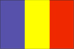

{kind=link}


![[Country map of Chad]](../maps/cd-map.jpg)
| Chad |  |
|
| | |
| Introduction |
Background: Chad, part of France's African holdings until 1960, endured three decades of ethnic warfare as well as invasions by Libya before a semblance of peace was finally restored in 1990. A transitional government eventually suppressed or came to terms with most political-military groups, settled a territorial dispute with Libya on terms favorable to Chad, drafted a democratic constitution, and held multiparty presidential and National Assembly elections in 1996 and 1997 respectively. In 1998 a new rebellion broke out in northern Chad, which continued to escalate throughout 1999. Despite movement toward democratic reform, power remains in the hands of a northern ethnic oligarchy.
| Geography |
Location: Central Africa, south of Libya
Geographic coordinates: 15 00 N, 19 00 E
Map references: Africa
Area:
total:
1.284 million sq km
land:
1,259,200 sq km
water:
24,800 sq km
Area - comparative: slightly more than three times the size of California
Land boundaries:
total:
5,968 km
border countries:
Cameroon 1,094 km, Central African Republic 1,197 km, Libya 1,055 km, Niger 1,175 km, Nigeria 87 km, Sudan 1,360 km
Coastline: 0 km (landlocked)
Maritime claims: none (landlocked)
Climate: tropical in south, desert in north
Terrain: broad, arid plains in center, desert in north, mountains in northwest, lowlands in south
Elevation extremes:
lowest point:
Djourab Depression 160 m
highest point:
Emi Koussi 3,415 m
Natural resources: petroleum (unexploited but exploration under way), uranium, natron, kaolin, fish (Lake Chad)
Land use:
arable land:
3%
permanent crops:
0%
permanent pastures:
36%
forests and woodland:
26%
other:
35% (1993 est.)
Irrigated land: 140 sq km (1993 est.)
Natural hazards: hot, dry, dusty harmattan winds occur in north; periodic droughts; locust plagues
Environment - current issues: inadequate supplies of potable water; improper waste disposal in rural areas contributes to soil and water pollution; desertification
Environment - international agreements:
party to:
Biodiversity, Climate Change, Desertification, Endangered Species, Nuclear Test Ban, Ozone Layer Protection, Wetlands
signed, but not ratified:
Law of the Sea, Marine Dumping
Geography - note: landlocked; Lake Chad is the most significant water body in the Sahel
| People |
Population: 8,424,504 (July 2000 est.)
Age structure:
0-14 years:
48% (male 2,022,339; female 1,994,978)
15-64 years:
49% (male 1,964,216; female 2,204,902)
65 years and over:
3% (male 99,459; female 138,610) (2000 est.)
Population growth rate: 3.31% (2000 est.)
Birth rate: 48.81 births/1,000 population (2000 est.)
Death rate: 15.71 deaths/1,000 population (2000 est.)
Net migration rate: 0 migrant(s)/1,000 population (2000 est.)
Sex ratio:
at birth:
1.04 male(s)/female
under 15 years:
1.01 male(s)/female
15-64 years:
0.89 male(s)/female
65 years and over:
0.72 male(s)/female
total population:
0.94 male(s)/female (2000 est.)
Infant mortality rate: 96.66 deaths/1,000 live births (2000 est.)
Life expectancy at birth:
total population:
50.49 years
male:
48.5 years
female:
52.56 years (2000 est.)
Total fertility rate: 6.63 children born/woman (2000 est.)
Nationality:
noun:
Chadian(s)
adjective:
Chadian
Ethnic groups:
Muslims, commonly referred to as "northerners" or "gorane" (Arabs, Toubou, Hadjerai, Fulbe, Kotoko, Kanembou, Baguirmi, Boulala, Zaghawa, and Maba); non-Muslims, commonly referred to as "southerners" (Sara, Ngambaye, Mbaye, Goulaye, Moundang, Moussei, Massa) including nonindigenous 150,000 (of whom 1,000 are French)
note:
ethnicity and regional background more commonly used to identify Chadians than religious affiliation
Religions: Muslim 50%, Christian 25%, indigenous beliefs (mostly animism) 25%
Languages: French (official), Arabic (official), Sara and Sango (in south), more than 100 different languages and dialects
Literacy:
definition:
age 15 and over can read and write French or Arabic
total population:
48.1%
male:
62.1%
female:
34.7% (1995 est.)
| Government |
Country name:
conventional long form:
Republic of Chad
conventional short form:
Chad
local long form:
Republique du Tchad
local short form:
Tchad
Data code: CD
Government type: republic
Capital: N'Djamena
Administrative divisions: 14 prefectures (prefectures, singular - prefecture); Batha, Biltine, Borkou-Ennedi-Tibesti, Chari-Baguirmi, Guera, Kanem, Lac, Logone Occidental, Logone Oriental, Mayo-Kebbi, Moyen-Chari, Ouaddai, Salamat, Tandjile
Independence: 11 August 1960 (from France)
National holiday: Independence Day, 11 August (1960)
Constitution: passed by referendum 31 March 1995
Legal system: based on French civil law system and Chadian customary law; does not accept compulsory ICJ jurisdiction
Suffrage: 18 years of age; universal
Executive branch:
chief of state:
President Lt. Gen. Idriss DEBY (since 4 December 1990)
head of government:
Prime Minister Nagdum YAMASSOUM (since 13 December 1999)
cabinet:
Council of State, members appointed by the president on the recommendation of the prime minister
elections:
president elected by popular vote to serve five-year terms; if no candidate receives at least 50% of the total vote, the two candidates receiving the most votes must stand for a second round of voting; last held 2 June and 11 July 1996 (next to be held June 2001); prime minister appointed by the president
election results:
in the first round of voting none of the 15 candidates received the required 50% of the total vote; percent of vote, first round - Lt. Gen. Idriss DEBY 43.8%, Wadal Abdelkader KAMOUGUE 12.4%; percent of vote, second round - Lt. Gen. Idriss DEBY 69.1%, Wadal Abdelkader KAMOUGUE 30.9%
note:
government coalition - MPS, UNDR, and URD
Legislative branch:
unicameral National Assembly (125 seats; members elected by popular vote to serve four-year terms); replaces the Higher Transitional Council or the Conseil Superieur de Transition
elections:
National Assembly - last held in two rounds on 5 January and 23 February 1997 (next to be held NA 2001); in the first round of voting some candidates won clear victories by receiving 50% or more of the vote; where that did not happen, the two highest scoring candidates stood for a second round of voting
election results:
percent of vote by party - NA; seats by party - MPS 65, URD 29, UNDR 15, RDP 3, others 13
Judicial branch: Supreme Court; Court of Appeal; Criminal Courts; Magistrate Courts
Political parties and leaders: National Union for Development and Renewal or UNDR [Saleh KEBZABO]; Patriotic Salvation Movement or MPS [Maldom Bada ABBAS, chairman] (originally in opposition but now the party in power and the party of the president); Rally for Democracy and Progress or RDP [Lal Mahamat CHOUA]; Union for Renewal and Democracy or URD [Gen. Wadal Abdelkader KAMOUGUE]
International organization participation: ACCT, ACP, AfDB, BDEAC, CEEAC, ECA, FAO, FZ, G-77, IBRD, ICAO, ICFTU, ICRM, IDA, IDB, IFAD, IFC, IFRCS, ILO, IMF, Intelsat, Interpol, IOC, ITU, NAM, OAU, OIC, OPCW, UDEAC, UN, UNCTAD, UNESCO, UNIDO, UPU, WCL, WHO, WIPO, WMO, WToO, WTrO
Diplomatic representation in the US:
chief of mission:
Ambassador Hassaballah Abdelhadi Ahmat SOUBIANE
chancery:
2002 R Street NW, Washington, DC 20009
telephone:
[1] (202) 462-4009
FAX:
[1] (202) 265-1937
Diplomatic representation from the US:
chief of mission:
Ambassador Christopher GOLDTHWAIT
embassy:
Avenue Felix Eboue, N'Djamena
mailing address:
B. P. 413, N'Djamena
telephone:
[235] (51) 70-09, (51) 90-52, (51) 92-33
FAX:
[235] (51) 56-54
Flag description: three equal vertical bands of blue (hoist side), yellow, and red; similar to the flag of Romania; also similar to the flags of Andorra and Moldova, both of which have a national coat of arms centered in the yellow band; design was based on the flag of France
| Economy |
Economy - overview: Landlocked Chad's economic development suffers from it's geographic remoteness, drought, lack of infrastructure, and political turmoil. About 85% of the population depends on agriculture, including the herding of livestock. Of Africa's Francophone countries, Chad benefited least from the 50% devaluation of their currencies in January 1994. Financial aid from the World Bank, the African Development Fund, and other sources is directed largely at the improvement of agriculture, especially livestock production. Due to lack of financing, the development of the Doba Basin oil fields, originally due to finish in 2000, has been substantially delayed.
GDP: purchasing power parity - $7.6 billion (1999 est.)
GDP - real growth rate: 0.6% (1999 est.)
GDP - per capita: purchasing power parity - $1,000 (1999 est.)
GDP - composition by sector:
agriculture:
38%
industry:
14%
services:
48% (1998)
Population below poverty line: NA%
Household income or consumption by percentage share:
lowest 10%:
NA%
highest 10%:
NA%
Inflation rate (consumer prices): 12% (1998 est.)
Labor force: NA
Labor force - by occupation: agriculture 85% (subsistence farming, herding, and fishing)
Unemployment rate: NA%
Budget:
revenues:
$198 million
expenditures:
$218 million, including capital expenditures of $146 million (1998 est.)
Industries: cotton textiles, meat packing, beer brewing, natron (sodium carbonate), soap, cigarettes, construction materials
Industrial production growth rate: 5% (1995)
Electricity - production: 100 million kWh (1998)
Electricity - production by source:
fossil fuel:
100%
hydro:
0%
nuclear:
0%
other:
0% (1998)
Electricity - consumption: 93 million kWh (1998)
Electricity - exports: 0 kWh (1998)
Electricity - imports: 0 kWh (1998)
Agriculture - products: cotton, sorghum, millet, peanuts, rice, potatoes, manioc (tapioca); cattle, sheep, goats, camels
Exports: $288 million (f.o.b., 1999 est.)
Exports - commodities: cotton, cattle, textiles
Exports - partners: Portugal 30%, Germany 14%, Thailand, Costa Rica, South Africa, France (1997)
Imports: $359 million (f.o.b., 1999 est.)
Imports - commodities: machinery and transportation equipment, industrial goods, petroleum products, foodstuffs, textiles
Imports - partners: France 41%, Nigeria 10%, Cameroon 7%, India 6% (1997)
Debt - external: $1 billion (1999 est.)
Economic aid - recipient: $238.3 million (1995); note - $125 million committed by Taiwan (August 1997); $30 million committed by African Development Bank
Currency: 1 Communaute Financiere Africaine franc (CFAF) = 100 centimes
Exchange rates:
Communaute Financiere Africaine Francs (CFAF) per US$1 - 647.25 (January 2000), 615.70 (1999), 589.95 (1998), 583.67 (1997), 511.55 (1996), 499.15 (1995)
note:
since 1 January 1999, the CFAF is pegged to the euro at a rate of 655.957 CFA francs per euro
Fiscal year: calendar year
| Communications |
Telephones - main lines in use: 5,000 (1995)
Telephones - mobile cellular: 0 (1995)
Telephone system:
primitive system
domestic:
fair system of radiotelephone communication stations
international:
satellite earth station - 1 Intelsat (Atlantic Ocean)
Radio broadcast stations: AM 2, FM 3, shortwave 5 (1998)
Radios: 1.67 million (1997)
Television broadcast stations: 1 (1997)
Televisions: 10,000 (1997)
Internet Service Providers (ISPs): 1 (1999)
| Transportation |
Railways: 0 km
Highways:
total:
33,400 km
paved:
267 km
unpaved:
33,133 km (1996 est.)
Waterways: 2,000 km navigable
Ports and harbors: none
Airports: 49 (1999 est.)
Airports - with paved runways:
total:
7
over 3,047 m:
1
2,438 to 3,047 m:
3
1,524 to 2,437 m:
1
914 to 1,523 m:
1
under 914 m:
1 (1999 est.)
Airports - with unpaved runways:
total:
42
1,524 to 2,437 m:
13
914 to 1,523 m:
19
under 914 m:
10 (1999 est.)
| Military |
Military branches: Armed Forces (includes Ground Force, Air Force, and Gendarmerie), Republican Guard, Rapid Intervention Force, Police, Rural and Nomadic Guard (GNNT)
Military manpower - military age: 20 years of age
Military manpower - availability:
males age 15-49:
1,749,033 (2000 est.)
Military manpower - fit for military service:
males age 15-49:
915,664 (2000 est.)
Military manpower - reaching military age annually:
males:
79,596 (2000 est.)
Military expenditures - dollar figure: $39 million (FY96)
Military expenditures - percent of GDP: 3.5% (FY96)
| Transnational Issues |
Disputes - international: delimitation of international boundaries in the vicinity of Lake Chad, the lack of which led to border incidents in the past, has been completed and awaits ratification by Cameroon, Chad, Niger, and Nigeria